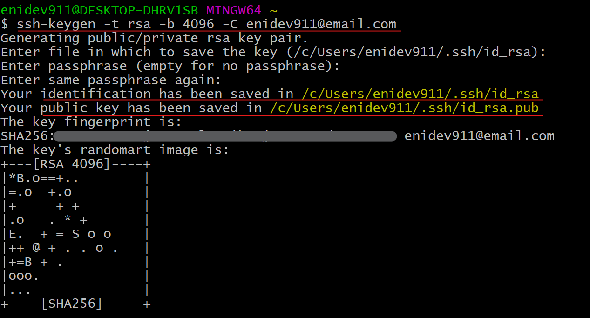
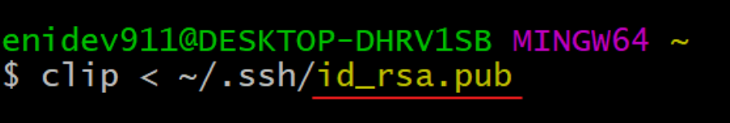
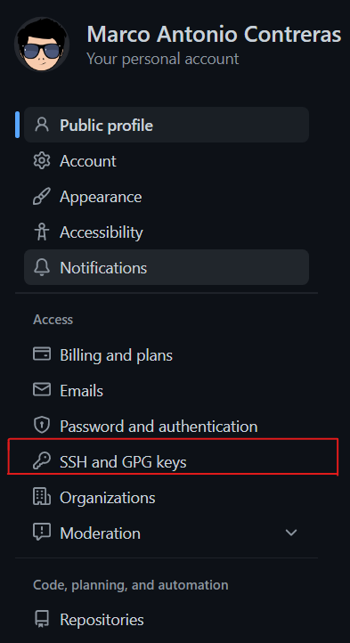
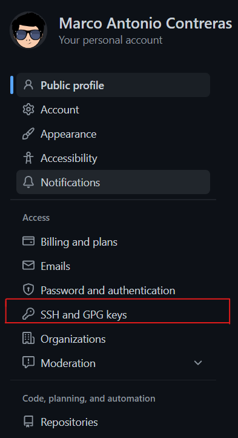
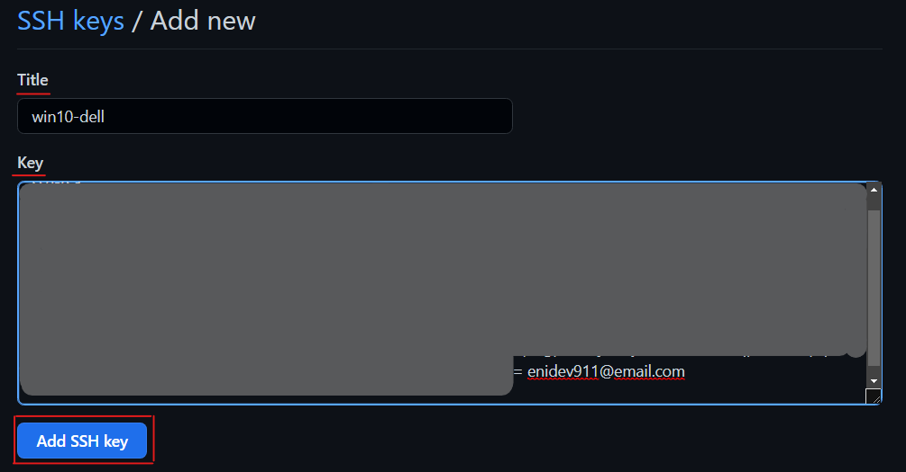
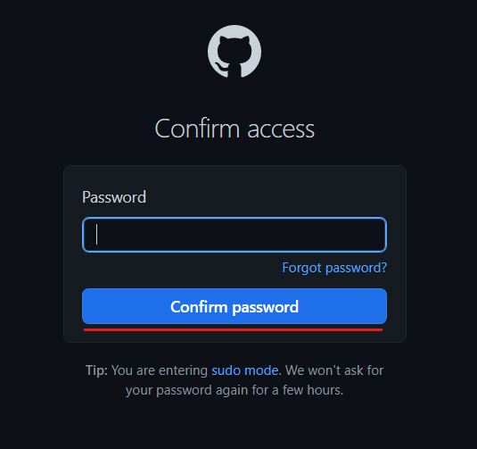

CONFIGURAR LLAVE SSH USANDO GITBASH
Contenido
📍 Generar una nueva llave
📍 Agregar la nueva llave al servicio de ssh-agent
📍 Registrar la llave pública a tu cuenta de GitHub
📍 Probar conexión
Generar par de clave pública y privada
Para generar los pares de claves haremos uso de la herramienta ssh-keygen. Este programa está disponible por medio de la línea de comandos para Linux, MacOSX y en Git Bash en Windows.
Para esta guía voy a utilizar el programa Git Bash.
En la mayoría de los casos cuando hemos instalado Git Bash, se nos habilitará la opción en el menú contextual del clic derecho para abrirlo:

1. Crear nueva clave
Comience creando una nueva clave, usando su correo electrónico como etiqueta en la terminal
ssh-keygen -t rsa -b 4096 -C "user@email.com"
Explicación:
- -t rsa: Especifica el algoritmo de encriptación en este caso el más común es rsa.
- -b 4096: Especifica que tan compleja es la llave (eL tamaño 4096 se considera seguro).
- -C "user@email.com": Especifica el email con el que se va a configurar la llave.
Se le pedirá donde almacenar la nueva llave generada (Si solo presiona Enter por lo general se almacena en el directorio del usuario en una subcarpeta oculta):
Enter file in which to save the key (/c/Users/<user>/.ssh/id_rsa):
Seleccione una ubicación de archivo o solo presione Enter se creara en la ubicación por defecto.
Podemos darle un nombre descriptivo como /c/Users/<myUser>/.ssh/gh_rsa (gh: github). (Esto es opcional)
Luego nos va pedir ingresar una frase de contraseña segura la cual creará una capa adicional de seguridad. Evitará que cualquier persona que obtenga acceso a su computadora use esa clave sin la frase de contraseña. Sin embargo, será necesario que proporcione la frase de contraseña cada vez que se utilice la llave.
A modo personal prefiero no utilizar una frase de confirmación ya que una llave SHH la suelo configurar en mi equipo personal y para efecto de productividad sin la frase ahorro segundos de vida.
Enter passphrase (empty for no passphrase): Enter same passphrase again:
Luego nos va pedir confirmar
Enter same passphrase again:
Por último nos devuelve el hash generado para la nueva llave creada.
 Captura: Crear una nueva clave en GitBash
Agregar llave al SSH-Agent
El agente ssh (ssh-agent) es un programa auxiliar que realiza un seguimiento de las claves de identidad del usuario y sus frases de contraseñas. El agente puede usar las claves para iniciar sesión en otros servidores sin que el usuario escriba nuevamente una contraseña o frase de contraseña. En palabras simples podemos decir que se trata de un programa para contener llaves privadas, utilizadas para la autenticación de claves públicas.
Antes de agregar una nueva clave SSH al servicio de ssh-agent para gestionar tus claves, debes haber comprobado las claves SSH existente y generado una nueva clave SSH y verificar que se esté ejecutando el servicio.
1. Paso
Verificar que el ssh-agent se esté ejecutando.
eval $(ssh-agent -s)
eval: Ejecuta un comando de shell y efectua una doble
evaluación en la línea de
comandos.

Captura: ejecutar comando eval (el pid es diferente para cada computadora)
2. Paso
Agrega tu llave ssh privada al ssh-agent. Si creaste tu llave con un nombre distinto debes apuntar hacia donde se encuentre la llave que creaste. Si dejaste los valores predeterminado basta con copiar el siguiente comando.
ssh-add ~/.ssh/id_rsa

Captura: añadir la llave ssh creada al ssh agent.
Ahora el par de claves ssh está listo para usarse.
Registrar la llave pública a GitHub
En Git Bash podemos usar la herramienta clip de Windows para copiar tu clave de una manera sencilla y rápida.
Copiar la clave pública al portapapeles 📋
clip < ~/.ssh/id_rsa.pub
Explicación:
- ~: es un símbolo llamado virgulilla que en los sistemas operativos UNIX se refiere al valor de la variable $HOME, esto es, el directorio del usuario que está logueado.
- id_rsa.pub: Este archivo es el que almacena el contenido de la llave pública, por ende, debemos tener mucho cuidado en verificar que estemos copiando el contenido de este archivo y no de otro.

Captura: copiar clave pública al portapapeles.
 Ahora vamos a nuestra cuenta de GitHub e
iniciamos sesión.
Ahora vamos a nuestra cuenta de GitHub e
iniciamos sesión.
En la esquina superior derecha de nuestra página, das clic en tu foto de perfil y despues da clic en configuración. En la barra lateral de configuración de usuario, da clic en llaves SSH y GPG
 

 Haz clic en New SSH key o
Add SSH key.
Haz clic en New SSH key o
Add SSH key.

- En el campo “Title”, agrega una etiqueta descriptiva para la clave nueva. Por ejemplo, si estás usando tu equipo personal, es posible que llames a esta llave “Personal laptop HP-360”.
- Copia la clave que está contenida en el portapapeles en el campo “Key” Ctrl + V.

 Si se te solicita, confirma tu contraseña GitHub
Si se te solicita, confirma tu contraseña GitHub

 Está lista nuestra llave para poder utilizarla con
GitHub.
Está lista nuestra llave para poder utilizarla con
GitHub.

Probar la conexión SSH a GitHub
Ahora podemos probar nuestra conexión a través de SSH a GitHub.
ssh -T git@github.com
Si la última línea contiene su nombre de usuario en GitHub, quiere decir que estamos autenticado correctamente.